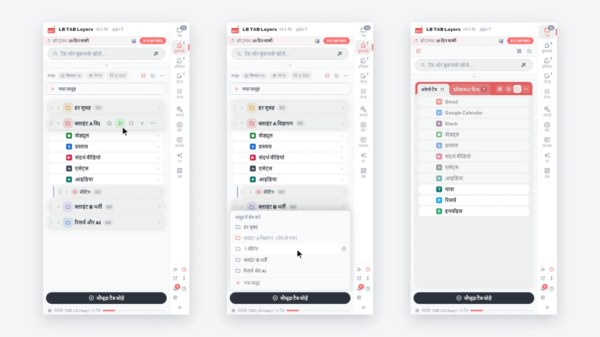
LB TAB Layers खोलने के लिए Alt+T दबाएं (Mac पर Option+T)। शुरुआत में सिर्फ़ तीन बातें जानना काफ़ी है: जिस टैब पर आप हैं उसे मौजूदा टैब जोड़ें से सेव करें, ▶ से पूरा समूह एक साथ खोलें, और ■ से उसे फिर बंद कर दें। आप जो भी सेव करते हैं, वह Chrome बुकमार्क के रूप में रहता है, इसलिए टैब बंद करने या Chrome दोबारा शुरू करने के बाद भी वहीं मिलता है।
LB TAB Layers इंस्टॉल करने के लिए धन्यवाद। इस पेज पर सिर्फ़ वही बातें हैं जो पहले पांच मिनट में काम आएंगी।
सोच सीधी-सी है। टैब यानी “अभी”: जिस पर आप इस समय काम कर रहे हैं। बुकमार्क यानी “बाद में”: जिस पर आप फिर लौटेंगे। आज का इतिहास यानी “रिकॉर्ड”: आपने आज क्या-क्या देखा। LB TAB Layers में आप एक ही साइड पैनल में इन तीनों के बीच आ-जा सकते हैं।
💡 इसे कभी भी खोलने के लिए Alt+T दबाएं (Mac पर Option+T)। आप टूलबार में LB TAB Layers के आइकन पर क्लिक भी कर सकते हैं। अगर आइकन नहीं दिख रहा, तो पज़ल के टुकड़े जैसे आइकन पर क्लिक करें और LB TAB Layers को पिन कर दें।
सबसे पहले: अपने मौजूदा बुकमार्क TAB Layers में ले आएं (सुझाया गया)
अगर Chrome में आपके बुकमार्क फ़ोल्डर पहले से बने हैं, तो शुरू करने का सबसे तेज़ तरीका है पहले उन्हें TAB Layers में ले आना। नए समूह बनाने की ज़रूरत नहीं: आपके मौजूदा फ़ोल्डर ही हर काम या विषय के समूह बन जाते हैं और साइड पैनल में एक साथ दिखते हैं।
“अपने बुकमार्क से शुरू करें (सुझाया गया)” पर क्लिक करें
यह इंस्टॉल करने के तुरंत बाद दिखने वाली स्वागत स्क्रीन पर सबसे ऊपर है। बाद में आप इसे सेटिंग्स → डेटा → बुकमार्क से, या बड़े डैशबोर्ड में ऊपर दिए “बुकमार्क इम्पोर्ट करें” से भी खोल सकते हैं।
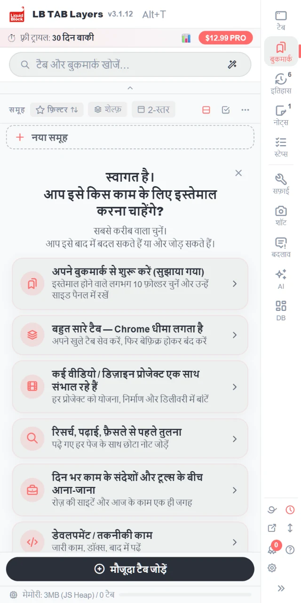
वे फ़ोल्डर चुनें जिन्हें आप सबसे ज़्यादा इस्तेमाल करते हैं (शुरू में लगभग 10)
आपके Chrome बुकमार्क फ़ोल्डर की सूची दिखती है। जिन्हें आप अक्सर इस्तेमाल करते हैं, उन पर टिक लगाएं। “3 / 10” जैसा काउंटर बताता है कि आपने कितने चुने हैं। सभी को चुनना ज़रूरी नहीं; यह सोचने का भी अच्छा मौका है कि कौन-से बुकमार्क सच में आपके काम आते हैं।
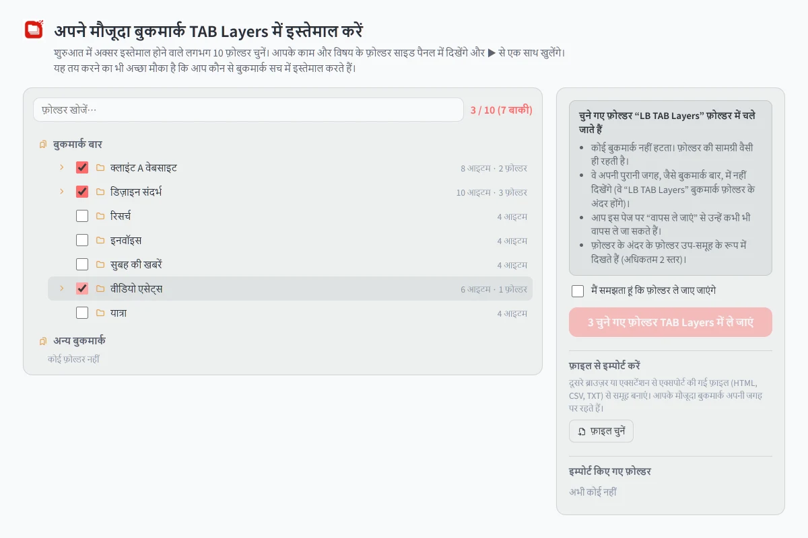
“मैं समझता हूं कि फ़ोल्डर ले जाए जाएंगे” पर टिक लगाएं और फ़ोल्डर ले जाएं
फ़ोल्डर आपके Chrome बुकमार्क के अंदर “LB TAB Layers” फ़ोल्डर में चले जाते हैं। कुछ भी हटाया नहीं जाता और अंदर की चीज़ें वैसी ही रहती हैं। वे अपनी पुरानी जगह (जैसे बुकमार्क बार) में नहीं दिखेंगे, लेकिन इसी पेज पर “वापस ले जाएं” से आप उन्हें कभी भी पुरानी जगह लौटा सकते हैं।
वे साइड पैनल में समूहों के रूप में दिखते हैं
हर फ़ोल्डर एक समूह बन जाता है और उसके अंदर के फ़ोल्डर उप-समूह बन जाते हैं। किसी समूह के ▶ पर क्लिक करें, तो उसके सभी पेज एक साथ खुल जाते हैं।
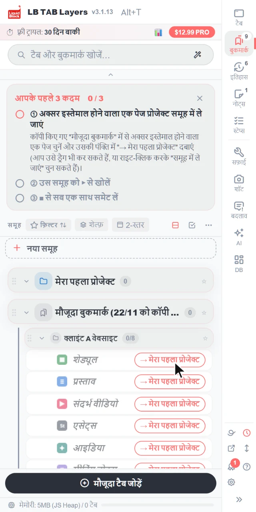
1. स्क्रीन को समझें
पैनल के किनारे पर बटनों की एक खड़ी कतार है: टैब, बुकमार्क, इतिहास, नोट्स और स्टेप्स। किसी एक पर क्लिक करते ही वह व्यू खुल जाता है। छोटे अंक बताते हैं कि, उदाहरण के लिए, कितने टैब खुले हैं या आपके कितने समूह हैं।
- टैब — वे टैब जो अभी खुले हैं और अब तक कहीं सेव नहीं हुए
- बुकमार्क — आपके सेव किए गए टैब, समूहों में रखे हुए; हर प्रोजेक्ट का एक समूह
- इतिहास — वे पेज जो आपने आज देखे, वे भी जिन्हें आपने सेव नहीं किया
- नोट्स और स्टेप्स — काम के नोट्स और एक-एक कदम करके पूरी की जाने वाली चेकलिस्ट
बीच की लाइन के नीचे टूल हैं। पहले दिन आपको उनकी ज़रूरत नहीं पड़ेगी।
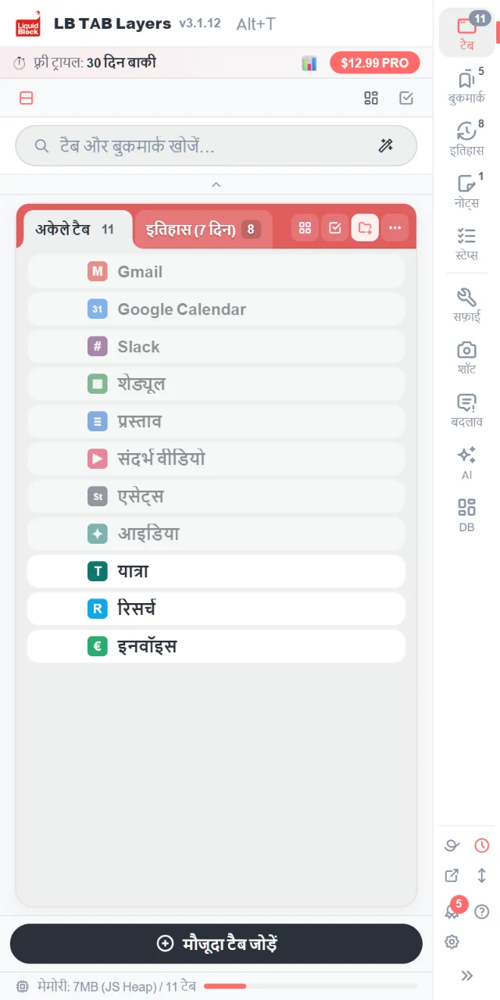
2. बुनियादी बातें
समूह बनाएं
बुकमार्क व्यू में, सूची के ऊपर + नया समूह पर क्लिक करें। उसे किसी काम का नाम दें, जैसे “क्लाइंट C वेबसाइट” या “हर सुबह”। सबसे अच्छा तरीका है हर प्रोजेक्ट के लिए एक समूह।
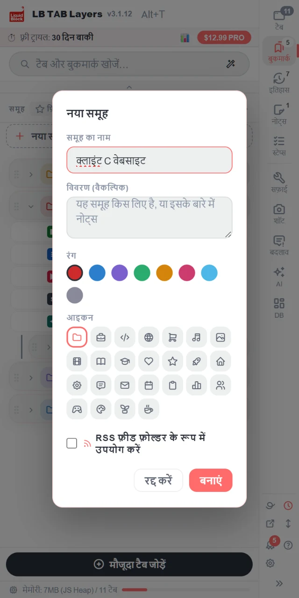
जिस टैब पर आप हैं, उसे सेव करें
पैनल में नीचे मौजूदा टैब जोड़ें पर क्लिक करें और एक समूह चुनें। जिन समूहों में यह पेज पहले से है, उन पर सेव हो गया लिखा दिखता है।
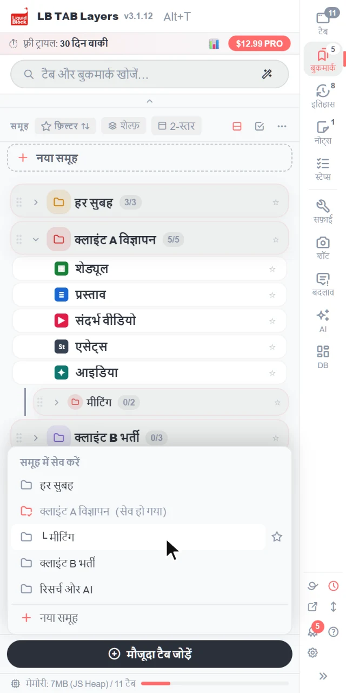
कई खुले टैब एक साथ सेव करें
टैब व्यू में, किसी टैब के बाईं ओर बने गोले पर क्लिक करके चुनना शुरू करें। फिर बाकी जिन टैब को सेव करना है, उनके गोलों पर क्लिक करें, नीचे समूह में पर क्लिक करें और एक समूह चुनें। आप टैब को एक-एक करके किसी समूह पर ड्रैग भी कर सकते हैं।
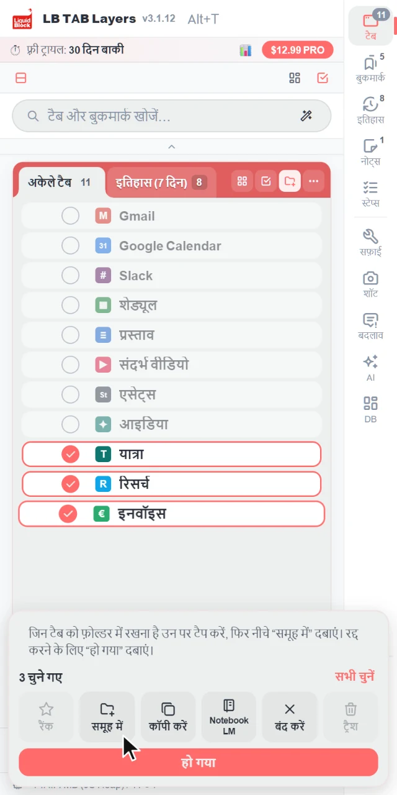
▶ से सब खोलें, ■ से सब बंद करें
किसी समूह पर माउस ले जाएं और ▶ पर क्लिक करें, तो उसके सभी टैब खुल जाते हैं। वे एक साथ Chrome टैब ग्रुप के रूप में खुलते हैं, जिसका नाम और रंग आपके समूह जैसा ही होता है। काम पूरा होने पर ■ पर क्लिक करें, तो वह पूरा टैब ग्रुप एक बार में बंद हो जाता है। आपके सेव किए गए टैब सेव ही रहते हैं।
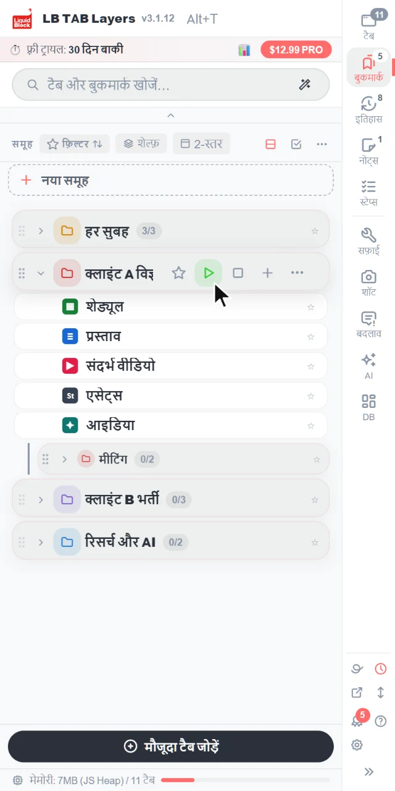
खोजें
ऊपर के खोज बॉक्स में टाइप करें, तो आपके खुले टैब, सेव किए गए टैब और आज का इतिहास एक साथ खोजे जाते हैं। टाइपिंग की छोटी-मोटी गलती से फ़र्क नहीं पड़ता।
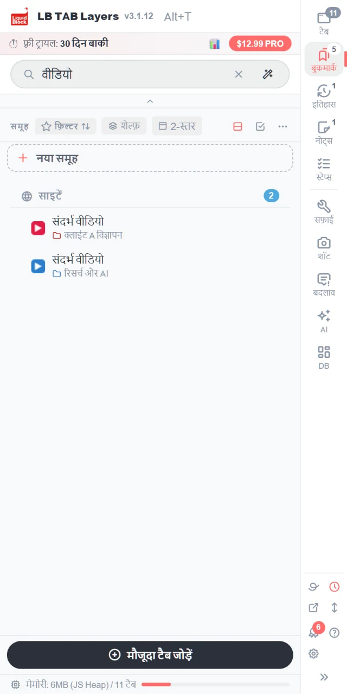
3. काम संभालने का आसान तरीका
हर प्रोजेक्ट के लिए एक समूह
समूह को किसी एक काम की मेज़ समझें। पूरा दिन इसी तरह चल सकता है:
- सुबह — आज के प्रोजेक्ट पर ▶ क्लिक करें और वहीं से शुरू करें जहां छोड़ा था
- काम बदलते समय — मौजूदा प्रोजेक्ट को ■ से बंद करें और अगला ▶ से खोलें
- दिन के अंत में — बस ■ पर क्लिक करें। कल ▶ सब कुछ वापस ले आएगा
रोज़ की साइटें पिन बार पर रखें
जिन साइटों को आप रोज़ खोलते हैं, जैसे ईमेल या कैलेंडर, उनके लिए किसी टैब या बुकमार्क पर राइट-क्लिक करें और पिन बार में जोड़ें चुनें। वे पैनल में ऊपर छोटे आइकन के रूप में रहती हैं और एक क्लिक में खुल जाती हैं (अधिकतम 12)। आप उन्हें ड्रैग करके भी वहां रख सकते हैं।
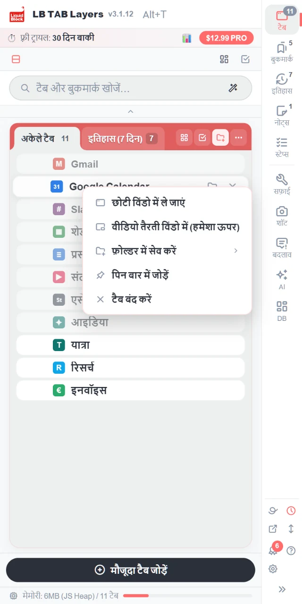
हर प्रोजेक्ट के लिए अलग विंडो
किसी समूह पर राइट-क्लिक करें और नई विंडो में खोलें चुनें, तो वह एक अलग विंडो में टैब ग्रुप के रूप में खुलता है। यह तब काम आता है जब आप दो काम साथ-साथ कर रहे हों या दूसरा मॉनिटर इस्तेमाल करते हों।
कुछ सेव करना भूल गए? वह आज के इतिहास में है
सब कुछ सेव करना ज़रूरी नहीं। जो पेज आपने सेव नहीं किए, वे इतिहास में मिल जाते हैं, उसी क्रम में जिसमें आपने आज उन्हें देखा। जो ज़रूरी है उसे किसी समूह में सेव करें और बाकी बंद कर दें; ज़्यादातर इतना ही काफ़ी होता है।
🔒 आप जो भी सेव करते हैं, वह Chrome बुकमार्क के रूप में रहता है। टैब बंद करने या Chrome दोबारा शुरू करने के बाद भी आपके सेव किए गए टैब वहीं रहते हैं, और LB TAB Layers आपके बुकमार्क कहीं नहीं भेजता। एक्सटेंशन के अंदर रखा डेटा, जैसे नोट्स, सेटिंग्स से एक्सपोर्ट किया जा सकता है।
दस और काम गाइड (अंग्रेज़ी में) में देखें।
अक्सर पूछे जाने वाले सवाल
Q. LB TAB Layers कैसे खोलें?
कीबोर्ड पर Alt+T दबाएं (Mac पर Option+T)। आप टूलबार में LB TAB Layers के आइकन पर क्लिक भी कर सकते हैं।
Q. अगर मैं एक्सटेंशन अनइंस्टॉल कर दूं, तो क्या मेरे सेव किए गए टैब गायब हो जाएंगे?
नहीं। सेव किए गए टैब आपके Chrome बुकमार्क में रहते हैं, उन फ़ोल्डर में जिनके नाम आपके समूहों जैसे ही हैं। एक्सटेंशन के अंदर रखा डेटा, जैसे नोट्स, हट जाता है, इसलिए पहले उसे सेटिंग्स से एक्सपोर्ट कर लें।
Q. खोज बॉक्स कहां-कहां खोजता है?
आपके खुले टैब, समूहों में सेव किए गए टैब और आज के इतिहास में, सब एक साथ।
Q. क्या यह फ़्री है?
हां। फ़्री वर्ज़न में आप अधिकतम 5 समूह बना सकते हैं। आज का इतिहास, स्टेप्स, डैशबोर्ड और AI खोज PRO फ़ीचर हैं, और इंस्टॉल करने के बाद 30 दिन तक सभी फ़ीचर उपलब्ध रहते हैं।
एक प्रोजेक्ट से शुरू करें।
Alt+T से खोलें, जिस टैब पर हैं उसे सेव करें, ▶ से खोलें और ■ से बंद करें। खाता बनाने की ज़रूरत नहीं · Chrome बुकमार्क के रूप में सेव · 30 दिन तक सभी फ़ीचर फ़्री
Chrome में फ़्री में जोड़ें →